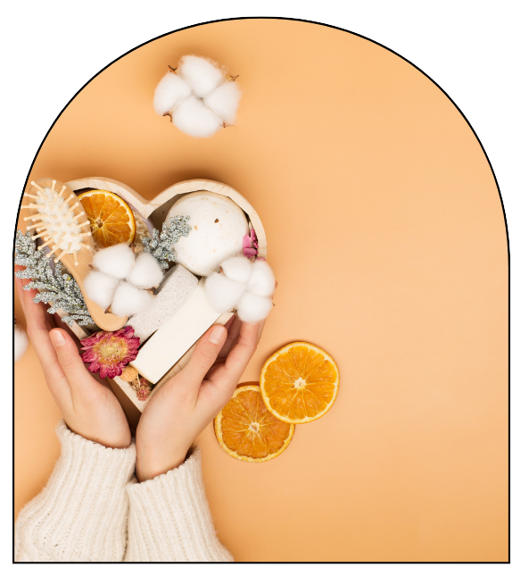

Sessão de Auto-Cuidados
A Importância do Auto Cuidado para o Bem-Estar
A Importância do Auto Cuidado para o Bem-Estar
O auto cuidado vai além de cuidar do corpo – é uma prática essencial para manter o equilíbrio entre a mente e o espírito. Em nossa vida cotidiana, cheia de responsabilidades e compromissos, é fundamental reservar um tempo para si mesmo. Descubra como sessões dedicadas ao auto cuidado podem transformar sua saúde mental, emocional e física.
O auto cuidado envolve todas as práticas que você realiza para melhorar seu bem-estar geral, seja emocional, físico ou mental. Ele pode incluir atividades relaxantes, cuidados com a pele, momentos de descanso ou até terapia, que ajudam a restaurar a energia e reduzir o estresse. Investir em você mesmo é um dos maiores atos de amor próprio.
Hidratação, limpeza e tratamentos específicos,Caminhadas, academia ou dança.
Meditação, yoga ou leitura.
Massagens, sessões de coaching, ou psicoterapia.
Veja algumas formas simples e eficazes de incluir o autocuidado na sua rotina diária.
Técnicas de relaxamento, como meditação e massagens, ajudam a diminuir a tensão do dia a dia.
Terapias, descanso e atividades prazerosas auxiliam no combate à ansiedade, depressão e outras condições.
O autocuidado promove um melhor descanso e recuperação, o que reflete diretamente na disposição.
Alimentação saudável, atividades físicas e cuidados com a pele ajudam a manter o corpo saudável e equilibrado.
Incorporar sessões de auto cuidado em sua rotina pode ser mais simples do que você imagina. Com pequenas ações diárias ou semanais, você consegue garantir momentos de relaxamento e autoconsciência, fundamentais para o seu equilíbrio.
Reserve um Tempo Só Para Você: Defina um momento no dia ou na semana para uma sessão exclusiva de auto cuidado. Pode ser um banho relaxante, uma massagem ou apenas um momento de silêncio.
Pratique Meditação ou Respiração Consciente: Reserve de 10 a 15 minutos para se desconectar e respirar profundamente. Isso ajuda a reduzir o estresse e a aumentar a clareza mental.
Cuide do Seu Corpo com Atividade Física: Realize atividades que você goste, seja uma caminhada ao ar livre, uma aula de yoga ou exercícios em casa. Isso ajudará a manter seu corpo saudável e sua mente tranquila.
Experimente Sessões de Bem-Estar: Agende sessões de massagem, terapia ou outras práticas de relaxamento para se desconectar e revigorar.
Alimente-se com Amor: Invista em uma alimentação saudável e equilibrada, escolhendo alimentos que nutram seu corpo e proporcionem energia.

se registre e venha fazer parte da nossa equipe!


TODOS OS DIREITOS RESERVADOS PARA “JÉSSICA BERNARDO RODRIGUES DA SILVA” CRIADORA DO SAUDE E BEM ESTAR.
Nos importamos com você! Email: bemestarsaude@gmail.com para futura assistência.